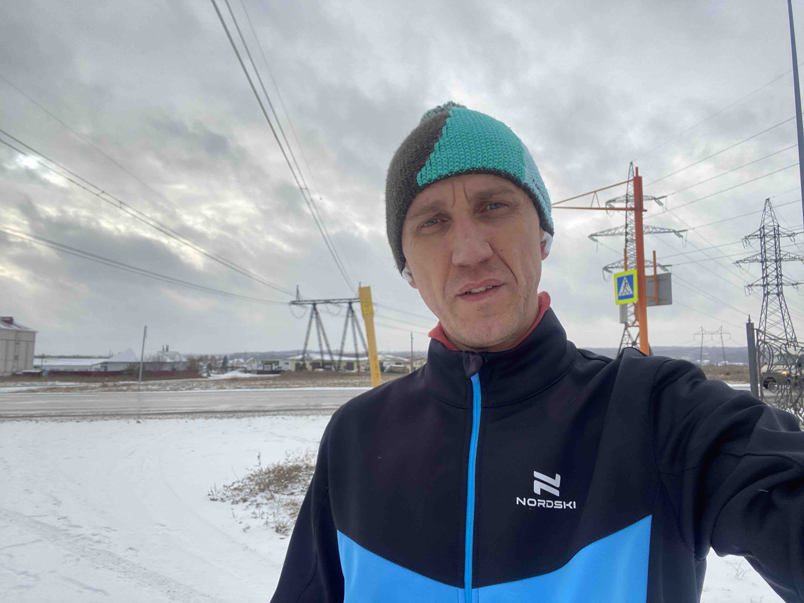
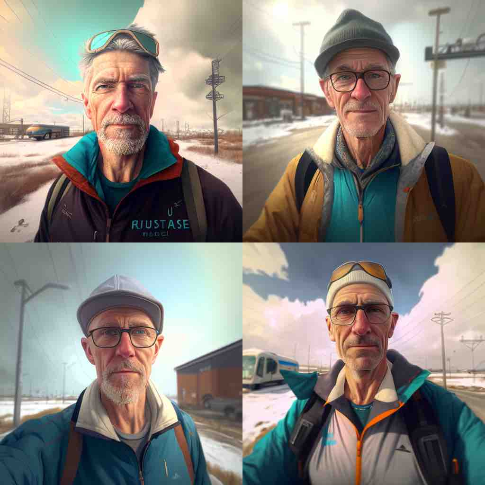
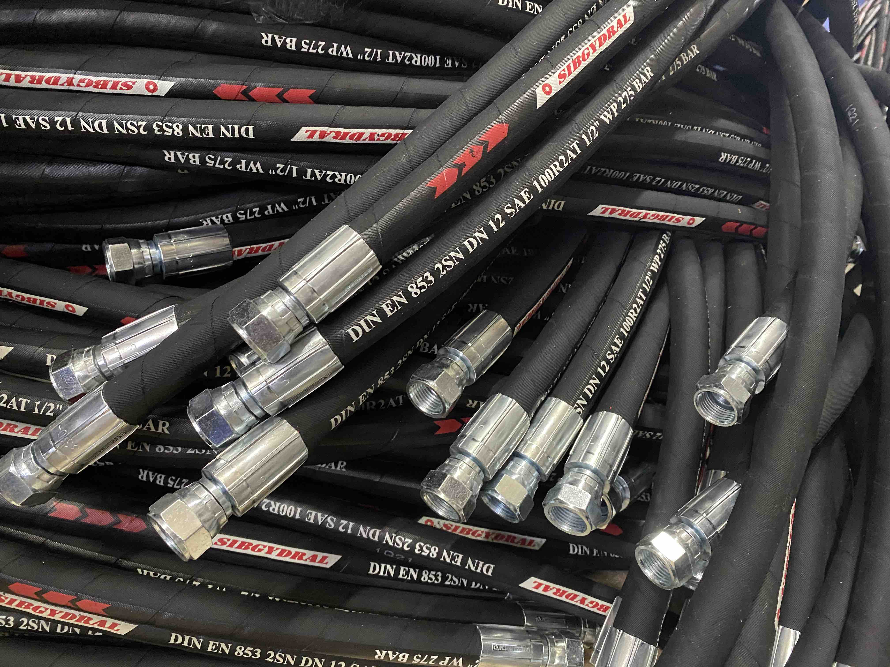
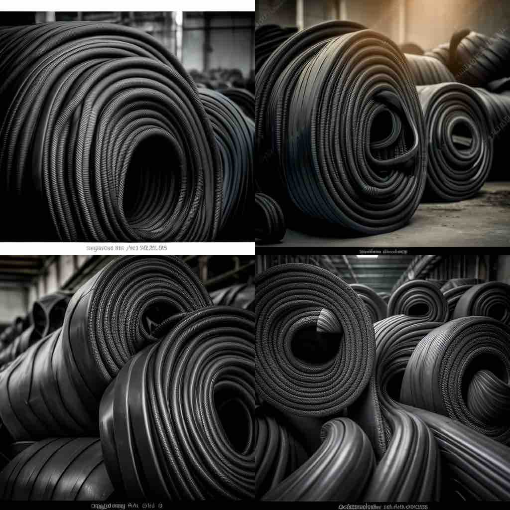
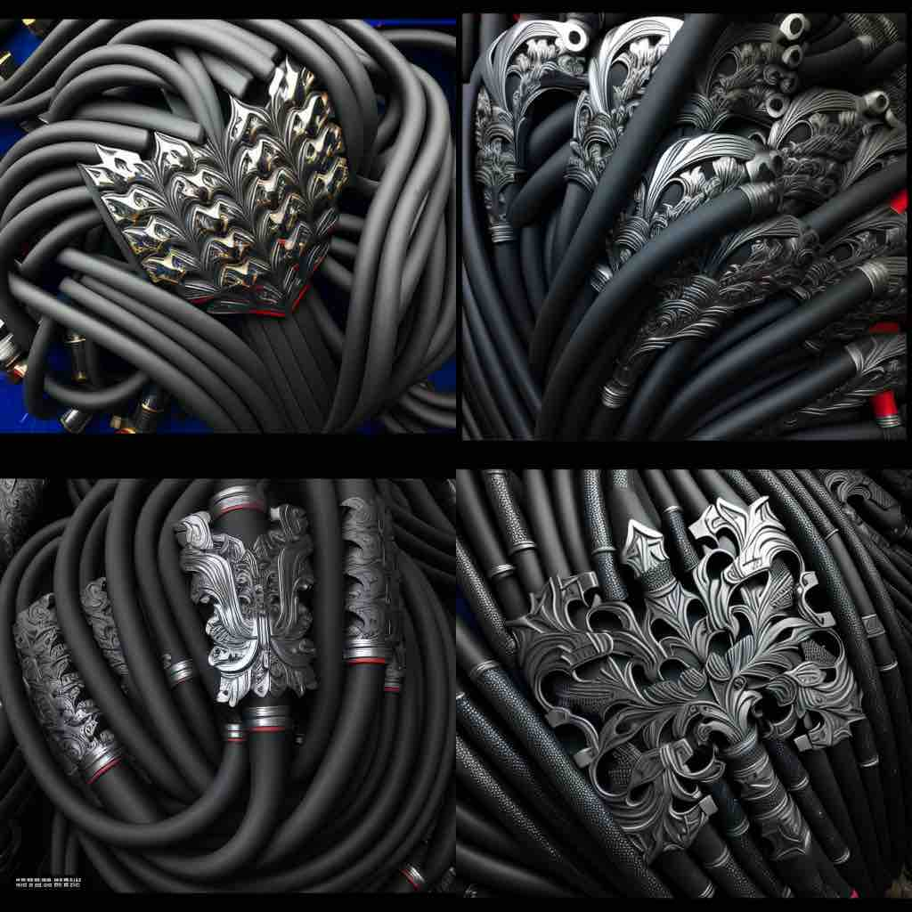
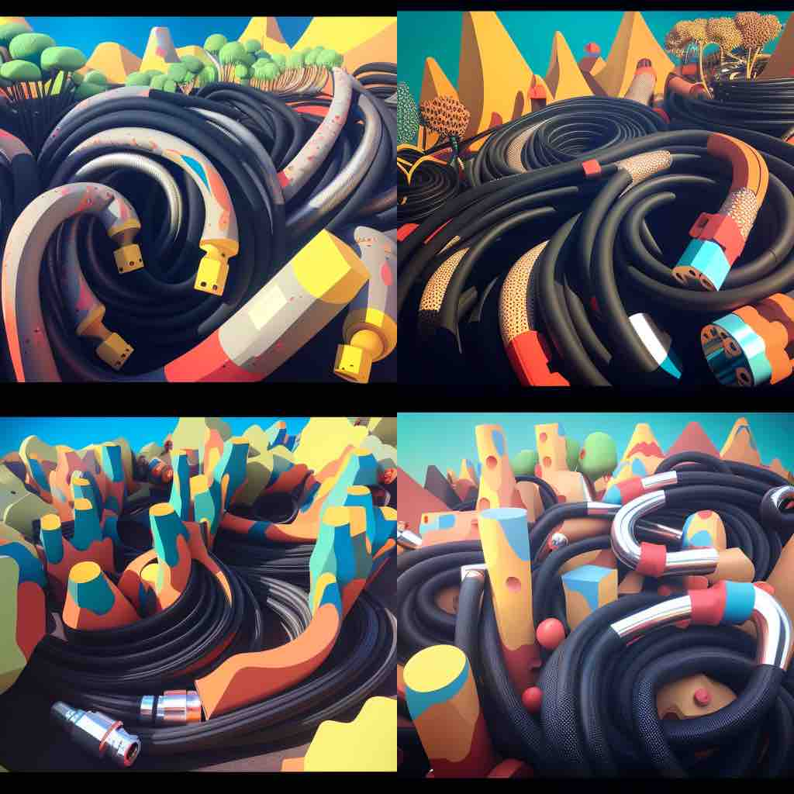
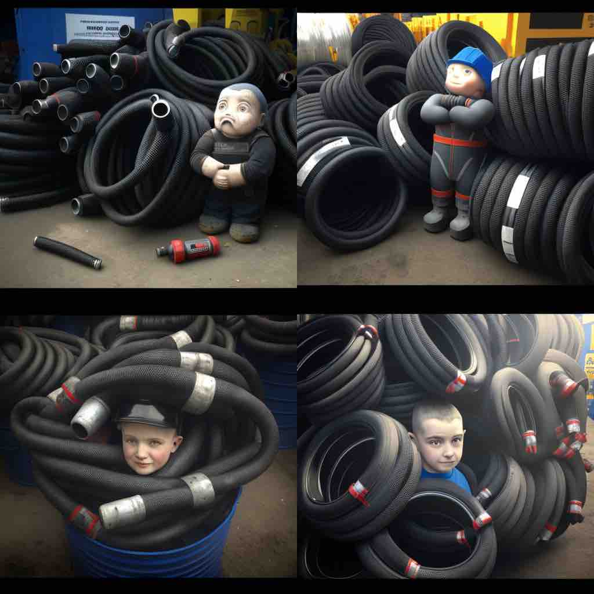
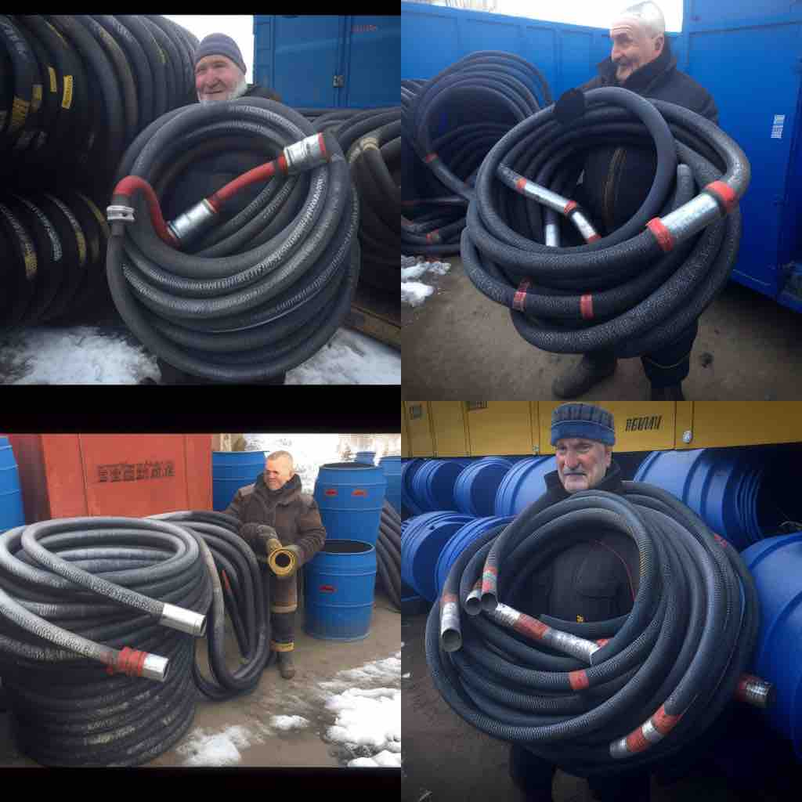
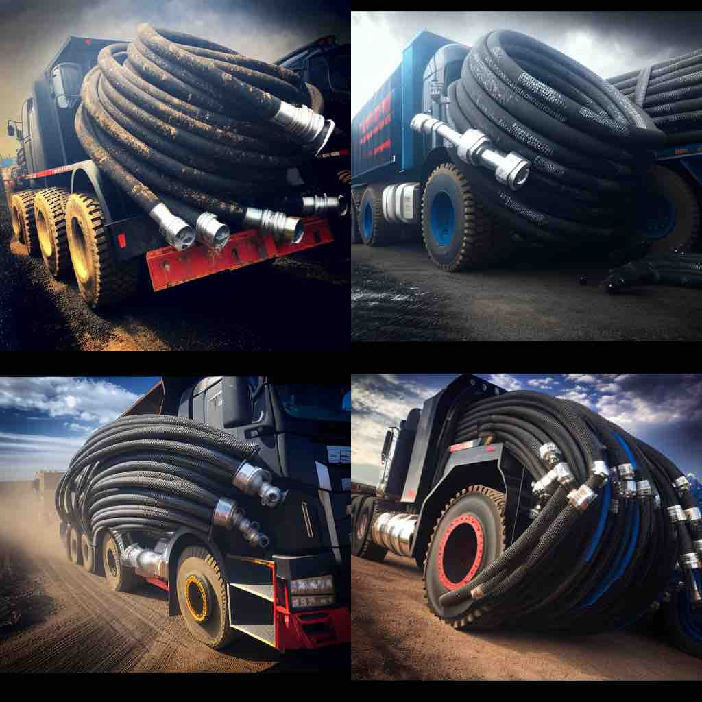
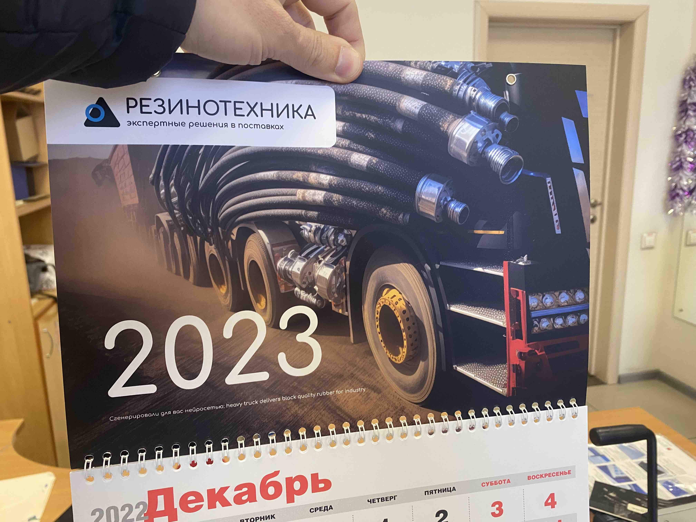

Много лет работаю в компании «Резинотехника». Компания является лидером в поставках резинотехнических изделий в Сибири. В этом году открыли филиалы в Казахстане и в Москве. В компании я курирую несколько секторов, в том числе маркетинг.
Это означает, каждый год мы с друзьями… делаем дизайн квартального календаря.
Хороший квартальный календарь сделать непросто. Он должен, с одной стороны, чётко ассоциироваться с компанией, с другой стороны, получатель должен хотеть повесить его на стену. Нужна хорошая обложка.
С образами для обложки квартального календаря для компании на рынке b2b есть несколько путей:
-
Можно взять или сделать фотографию продукции в процессе использования. Но наша номенклатура составляет тысячи наименований, а сфера её применения насчитывает десятки отраслей промышленности. Тяжело совместить на одной фотографии рукав высокого давления, буровой рукав, техпластины, конвейерную ленты и поливочный шланг.
-
Ещё один вариант — фотография сотрудника или сотрудницы (беспроигрышный). В предыдущие два годы мы использовали именно эти образы.
-
Третий способ решить проблему — использовать абстрактное изображение
В этом году я решил использовать третий способ. Причём, соответствуя духу времени, задейстовать для генерации абстрактного изображения нейросеть. Выбрал одну из самых распиаренных, Midjorney.
Сеть Midjourney обрабатывает изображения с помощью системы обмена сообщениями Discord. Бесплатно можно обработать около 20 фотографий.
Чтобы обработать фотографию, нужно разместить её где-нибудь в интернете и отправить в Discord ссылку на фотографию и какой-то текст, который будет использовать нейросеть.
На каждый запрос генерируется 4 изображения. Из четырёх вариантов можно выбрать один и улучшить его дополнительно.
Я уже пробовал экспериментировать со своими фотографиями, получалось интересно.
Моя фотография с пробежки

portrait of rich wise middle-aged man who likes to travel

С обложкой для календаря выходит не так гладко.
Для генерации решаю использовать фотографию РВД нашего собственного бренда Sibgydral

Запрос: rubber industry hoses black

интересно, но на обложку точно не тянет
Запрос: black rubber pattern russia future

Действительно похоже на Россию в будущем, cоздаём запрос поабстрактней
Запрос: abstract cartoon rubber landscape

Попробуем добавить человека. Весёлого.
funny boy sells black rubber things for industry

Действительно, весёлый. На стене будет смотреться странно. Пробую ещё накинуть вариантов
funny seller offers black rubber hose in siberia

Примерно так мы в Сибири и выглядим.
Продолжаю экспериментировать с запросами, пока не подбираю вариант, который мне нравится.
heavy truck delivers black quality rubber for industry

Выбираю один из четырех вариантов, прошу нейросеть сгеренировать более качественное изображение. Добавляю логотип, отправляю макет в типографию.
